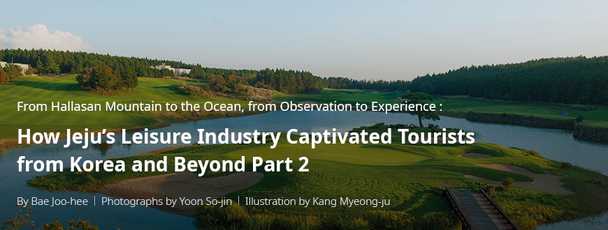
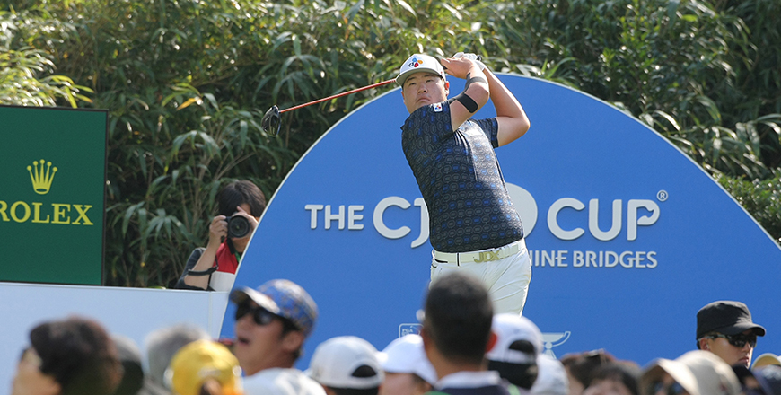
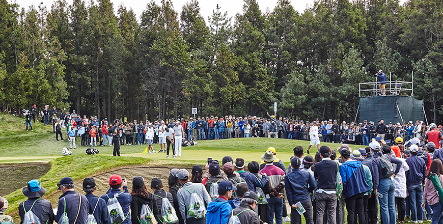

기획취재콘텐츠
- Home
- 제주라이프
- 기획취재콘텐츠
How Jeju’s Leisure Industry Captivated Tourists from Korea and Beyond Part 2새로운 글



The field of dreams for future golf stars and the driver of Jeju’s local economy, the CJ Cup
Organized by the CJ Group, the CJ Cup is the first and only PGA Tour tournament held in Korea. Under the slogan, “Bridge to Realization,” the tournament helps young Korean golfers realize their dream of competing in global events while contributing to the growth of the local economy.

- Im Sung-jae, the first Asian golfer to win the PGA Rookie of the Year title, taking a tee shot at the CJ Cup 2019 ⓒCJ Group -
Launched in 2017, the CJ Cup is scheduled for a 10-year run. Three tournaments have been held in Jeju so far, with astounding outcomes. In the first 3 years, 35,000, 41,000 and 46,000 galleries, respectively, visited the golf course where the tournament was held, which boosted Jeju’s economy. According to a research firm’s survey released by the CJ Group, in 2018, an average gallery visiting the golf course spent KRW 170,000 per day. The total direct effect of the CJ Cup in 2018 is estimated at KRW 24.9 billion. The tournament was also aired in 23 languages and watched by a billion households across 226 countries. Its media exposure alone is estimated to be worth KRW 184 billion.
The CJ Group also created promotional videos with PGA golfers in collaboration with the Jeju Tourism Organization. The video features PGA golfers enjoying Jeju’s specialties and natural environments. In the 2017 video, Adam Scott surfed on a Jeju beach and Jason Day was treated to Jeju’s local specialties: seafood caught by haenyeos and roasted black pigs. In 2018, Danny Willett climbed an Oreum to enjoy the beautiful landscape not found elsewhere in the world. The video of Brooks Koepka catching a 51 cm yellow porgy on the sea off the Jeju shores went viral on social media, especially among golf fans around the world.
In 2019, the globally released video showed Phil Mickelson and Choi Kyung-ju, two top players from the United States and Korea, respectively, enjoying the tea leaf field and horseback riding in Jeju. By showing renowned golfers candidly enjoying Jeju and having a great time, the video introduced the island’s charm to the world.
- (Left) Phil Mickelson’s participation in a Korean-style tea ceremony in 2019 ⓒCJ Group,
(Right) Choi Kyung-ju horseback riding in the same year ⓒCJ Group -
(Right) Choi Kyung-ju horseback riding in the same year ⓒCJ Group -
Perfect harmony with Jeju’s natural environment - Club Nine Bridges
The CJ Cup is held at Club Nine Bridges, a golf course widely praised for achieving perfect harmony with nature. The course accentuates the characteristics of Jeju’s nature and allows for different options depending on the golfer’s skill level. In addition, Jeju’s strong whirlwinds that baffled even PGA golfers, Hallasan Break, ) and the superb scenery of the surrounding nature serve as key points for the promotion of Jeju on the global stage.
Club Nine Bridges is a world-class golf course. In the golf magazine Golf Digest, which announces a list of the world’s top golf courses every 2 years, Club Nine Bridges ranked 23rd in 2018 and 18th in 2020. Moreover, the course won the Best Golf Course title in Korea for 6 consecutive years (as of 2019) and was inducted in the Korean Golf Hall of Fame in 2017. In 2018, the golf course hosted an LPGA tournament for the first time in Korea, along with other prestigious international events, including the World Club Championship.
※ 2) : The Hallasan Mountain may affect golfers’ perceptions of the slopes on the green.
- A full view of Hole 18 of Club Nine Bridges and the surrounding nature ⓒCJ Group -
- Justin Thomas walking to the green of Hole 18 for the award ceremony (2019) ⓒCJ Group -
The CJ Group chose Jeju as the site for its new golf course for a reason. In most cases, building a golf course in Korea means tearing down mountains and destroying nature in the area to a grave extent. However, in Jeju, the CJ Group was able to minimize damage to nature while building a world-class golf course.
Jeju’s climate is perfect for golfing all year round. In the island, you can feel various changes in nature. These factors make Jeju a perfect site for golf tourism. Jeju also offers a wide selection of spectacles, activities, and foods. I believe that Jeju’s image as a pollution-free region supported by the local government’s ecofriendly policies will improve the island’s chance of successfully developing its golf and tourism industries.
- Kim Yu-sang, Head of the Sports Marketing Division, CJ Group
CJ Group’s continued promotion of the golf industry and local economy
When planning for the PGA tour, the group first considered Club Nine Bridges as the tournament site, as it had been commended by golf experts across the world who have visited the course. The CJ Group pegged Club Nine Bridges as the best candidate to promote Jeju’s beautiful nature, food, and activities to the world.
Even though the CJ Cup has only taken place for three years, the CJ Group plans to thoroughly prepare for the next tournament for achieving distinguished quality and captivating PGA players and galleries with the experience.
Because of COVID-19, this year’s tournament will be held in the United States. However, the CJ Cup will continue to build on the tournament and add its unique flavors to create an event favored by players and fans alike. In addition, the CJ Group plans to continue its efforts promote Korean male golf, the golf industry, the local economy, and the globalization of the Korean culture as the tournament grows further.

- Crowded cloud crowd at THE CJ CUP (2018) ⓒCJ Group -